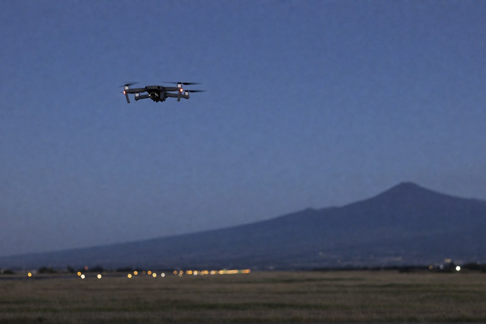

Sicilia · 20 novembre 2026
Un drone sopra Sigonella, la base chiusa per alcune ore

Il velivolo è stato rilevato prima delle 18 e l'allarme è rientrato alle 20:30. Indagano i carabinieri della polizia militare: l'ipotesi più accreditata è quella di un drone civile e di una bravata.
di Franco Zanghì
Allarme droni sulla base di Sigonella. La sera di venerdì 20 novembre un piccolo velivolo telecomandato è entrato nello spazio aereo della base militare, e lo scalo è rimasto chiuso per alcune ore.
Come scrive l'ANSA, dietro l'allarme ci sarebbe con ogni probabilità un drone privato, a uso civile. A confermarlo, in modo informale, sono fonti della base. L'ipotesi più accreditata, per ora, è quella di una bravata.
Siamo nella piana di Catania, nella base che ospita anche la Marina degli Stati Uniti.
Che cosa è successo
Secondo la ricostruzione riportata dall'ANSA il drone è stato rilevato dai sistemi di monitoraggio poco prima delle 18. È scattato il protocollo di sicurezza: si interrompe il segnale fra il radiocomando e il velivolo, si mettono in sicurezza le piste, si sospendono i decolli. L'allarme è rientrato alle 20:30.
Il drone, scrive la Gazzetta del Sud, non ha raggiunto la pista: ha sorvolato alcuni alloggi del personale statunitense.
Il volo dirottato che non c'è stato
La notizia era uscita nella notte sul social X, rilanciata da un account britannico che si occupa di difesa. Secondo alcuni media, ripresi da ilSicilia, un aereo cisterna americano avrebbe ricevuto l'ordine di deviare verso Aviano, per poi atterrare regolarmente a Sigonella.
Ma fonti dell'Aeronautica militare, sentite dall'ANSA, dicono che nessun aereo è stato dirottato: chi era in avvicinamento è rimasto in attesa, in quota. Le due versioni restano entrambe sul tavolo, attribuite a chi le sostiene.
Chi indaga
A indagare sono i carabinieri del nucleo di polizia militare della base. Sigonella, pur ospitando gli americani, resta una base italiana, sotto la giurisdizione del nostro Paese.
La politica chiede chiarezza
Giuseppe Provenzano, responsabile Esteri del Partito democratico, parla di grande preoccupazione e chiede al governo di riferire in Parlamento sulla natura dell'episodio e sui rischi per la sicurezza della base e del territorio.
Resta il punto che conta: un drone da poche centinaia di euro ha fermato per due ore e mezza uno degli scali militari più importanti del Mediterraneo. Se è stata una bravata, è una bravata che dice molto sulla fragilità dei cieli sopra le basi.
Fonti
- ANSA, 21 novembre 2026, ore 11:46, 12:24 e 13:01
- Sky TG24, «Sigonella, droni non autorizzati vicino base Usa: indagano carabinieri. Ipotesi uso civile», 21 novembre 2026
- Il Fogliettone, «Drone civile rilevato a Sigonella, chiusa per alcune ore la base militare»
- Quotidiano di Sicilia, «Sigonella, emergenza provocata da un drone amatoriale: il Pd chiede al governo di riferire»
- Pordenone Today, «Droni a Sigonella: rischio dirottamento di un volo verso Aviano, poi l'allarme è rientrato»
- Gazzetta del Sud e ilSicilia, 21 novembre 2026, con le dichiarazioni di Giuseppe Provenzano
L'attribuzione del drone a un uso civile è un'ipotesi di lavoro riferita da fonti della base, non un accertamento. Sul presunto dirottamento di un aereo cisterna le fonti si contraddicono: sono riportate entrambe le versioni.